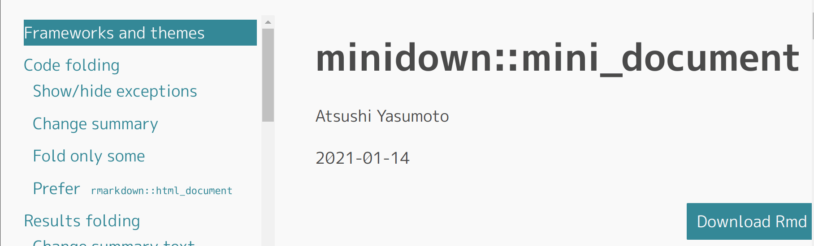

minidown::mini_documentはrmarkdown::html_documentを軽量化しつつ同等以上の機能提供を目指すR Markdown用HTMLフォーマットです。
どんなことができるかは以下を参照してください。実際にminidown::mini_documentを使ってレンダリングした結果なので、雰囲気がよくわかると思います。
また、インストールは以下のコマンドで行います。 CRANからもインストールできますが、本記事の内容はまだ反映されていません。
require(devtools)
install_github("atusy/minidown")さて、本題です。今回、下図のようにクリックした目次やスクロール先のセクションに追随して、目次をハイライトする機能を実装しました。

rmarkdown::html_document(toc = TRUE, toc_float = TRUE)と同等の機能ですね。利用するには以下のようにYAMLフロントマターを記述します。
output:
minidown::mini_document:
toc: true
toc_float: true
toc_highlight: trueEnjoy!
rmarkdown::html_documentのfloating_tocはTocifyというJavaScript製プラグインを用いています。
minidown::mini_documentでは目次のfloatingをHTMLとCSSだけで行っています。主要な技術は2つでしょうか。
position: stickyにより、目次を左側に固定rmarkdown::html_documentに倣ってfloating tocと称していますが、実態はsticky tocと言った方が妥当かも知れませんね。
CSS Grid Layoutをうまく使えるよう、Pandocのテンプレートにも手を加えてあります。
minidown版floating tocは軽量な一方、所詮はHTML+CSSなので、レスポンシブにも限度があります。仕方ないのでハイライト部分はJavaScriptでフルスクラッチしました。
highlightクラスに背景色と文字色を反転させるルールをDOMに追加highlightクラスを付与する。他のリンクからは同クラスを削除する。
window.addEventListner("scroll", ...)といった具合にページスクロールに反応して関数を実行しハイライト箇所を随時更新する。JavaScriptのソースコード
https://github.com/atusy/minidown/blob/41e4b5122fce4aae0b2d1224ee5c393a5e8dc82e/inst/rmarkdown/html/highlightToC/highlightToC.js
ちなみにスクロールイベントは大量に発生し、パフォーマンスに影響しやすいので、
Intersection Observer API
https://developer.mozilla.org/ja/docs/Web/API/Intersection_Observer_API
なるものを使うと良いそうです。その内こちらで再実装したいですね。
今度こそEnjoy!!